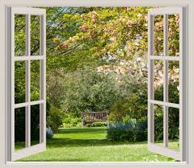

Catching Grandma
A Tale of The Misfortunate Twins
Grandma is about to walk out the door, she was just 1 foot away. Until Cora grabbed her by the hand and said: "if there's a whole world out there why are you keeping us here"? The grandma slaps Cora's hand off and snaps back at her, "you will only bring evil into this world".On that note, the grandma is about to close the door but Rome's foot stops the door from shutting. The twins both wanted the same thing, thought the same way and both knew what had to be done. With all their strength both Cora and Rome decided to make a run for it. The grandma goes flying onto the floor and the kids make a run for it. They didn't know where to go or how to get out, so they split up.
Cora went left and Roma went right, they went searching for a way out. Running as fast as they could and all of a sudden Roma calls for Cora's name. Following his voice she found him looking out the window, he says "it's so beautiful, come take a look". It was almost as if the children were born again. They broke open the window and climbed out. It was time to have a new and happy life. They ran as fast as they could into the forest.

They walked for miles, they were hungry and tired and all they wanted to do was to be able to rest. Cora convinced Roma to keep his eyes open for just a little bit, she was sure they would find a place to stay. For about 2 hours they walked and saw a flicking light. It was aflame! With delight, they began to run towards it. It is a diner, they walked in and bell charms, Cora and Roma get frightened; all the people around them notice and a nice woman comes up to them and asked where our parents are. They had no answer, so the lady sat them down at a table and gave them some food. She didn't know what to do next either, but the children helped her worries slip away as they did so too, nobody noticed. They were walking looking for a safe place to stay. Everything was so intriguing to them, as they were walking and a small fluffy pup begins to follow them. They didn't know what it was but they don't mind the company. With time they found an abandoned farm. They decided to spend the night and begin exploring the world with a fresh head.
One Month Later
BACK